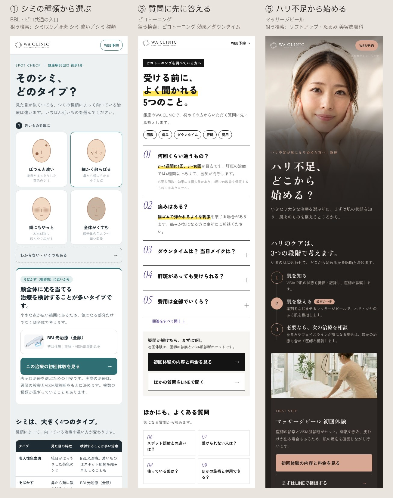
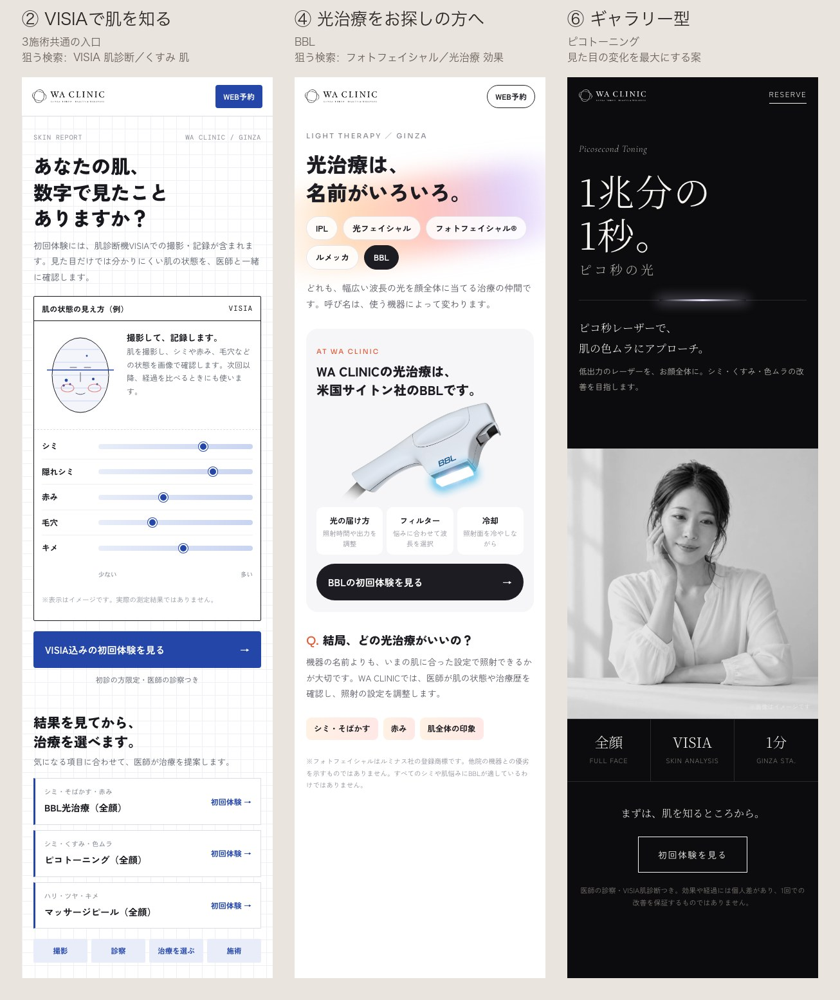
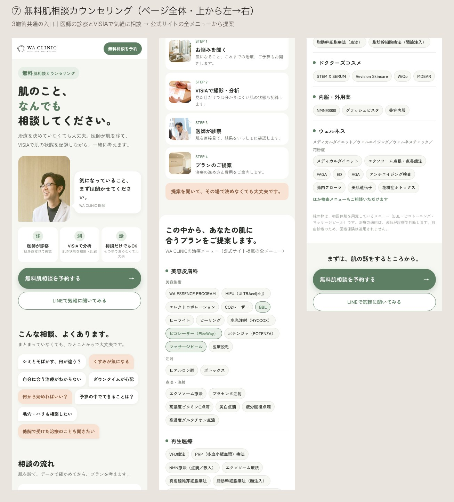

WA CLINIC 初回体験LP 新しい方向性の検討報告
2026年10月26日
Google広告90日分のデータを分析したところ、費用の多くが成果の出にくい「施術名だけ」の検索に使われていました。悩みで探す人のほうが、少ない費用で反応しています。そこで、悩みと疑問を入口にした新しいLP6案に、気軽な相談を入口にした1案を加えた計7案を、雰囲気が分かる範囲で作りました。
要点
- 施術名だけの検索が、費用のわりに最も弱い。 「ピコトーニング」「マッサージピール」などに費用の26%（約12万円）を使い、1件あたり6,691円かかっています。悩みで検索した人は1件あたり1,184円です。
- LPが検索語に合っておらず、広告の評価も低い。 主力キーワードの品質スコアは1〜3で、「LPの利便性」は平均以下です。「ピコトーニング」では、広告を出せたはずの機会の64%を逃しています。LPを検索語に合わせると、クリック単価と表示機会の両方に効きます。
- 新しいLPは「悩み」「疑問」「相談」を入口にする。 7案のうち5案は、検索データから狙う検索語を決めています。まずは方向性を2つ程度に絞りたいと考えています。
あわせて、予約完了が90日間で14件しか計測されていない問題があります。新しいLPの良し悪しを判断する前に、計測を整える必要があります。
分析の前提
WA CLINICのGoogle広告アカウントから、読み取り専用で取得したデータを使いました。
- 期間：2026年7月28日〜10月25日（90日間）
- 範囲：検索広告19キャンペーン、費用合計約109万円、10,318クリック。このうちBBL・ピコ・マッサージピール・しみ治療設計のキャンペーンを中心に見ています
- データ：検索語句レポート（11,109件）、キーワードと品質スコア、広告文、LP別の成果、キーワードプランナーの検索ボリューム（東京都・全国）
- 補足：Googleの検索候補・「関連する質問」、競合の検索広告、競合LPも確認しました
コンバージョンの数え方に注意が必要です。 広告管理画面の「コンバージョン」472件のほとんどは、予約・LINE・電話・Instagramのボタンを押した回数です。予約完了は14件でした。この報告の「反応」「1件あたり費用」は、ボタンクリックを含むこの数字で計算しています。
| 施術 | 90日間の費用 | 予約完了 |
|---|---|---|
| ピコトーニング | 約27.8万円 | 9件 |
| BBL | 約18.6万円 | 4件 |
| マッサージピール | 約16.3万円 | 1件 |
| しみ治療設計（有料相談） | 約9.1万円 | 0件 |
検索の段階ごとの成果
検索語を、「悩み」「施術名」「地域」「価格」「院名」の組み合わせで分類し、費用と反応を集計しました。
費用の最も多い「施術名だけ」の検索は、「悩み＋医療」の約5.7倍の費用でようやく1件の反応です。特にピールでは、「たるみ 美容皮膚科」など悩みの検索が1件816円、「マッサージピール」が1件13,501円と、差は約17倍でした。「銀座 シミ取り 放題」のように、スポットでシミを取りたい人には、今の初回体験LPが合っておらず、反応がありません。
その他の分析結果
1. 広告の品質評価が低く、表示機会を逃している
現在配信中のキャンペーン（10月3日〜）の主力キーワードです。
| キーワード | 品質スコア | LPの利便性 | 表示できた割合 | 広告ランク不足で逃した割合 |
|---|---|---|---|---|
| ピコトーニング | 3 / 10 | 平均以下 | 15% | 64% |
| マッサージピール | 3 / 10 | 平均以下 | 25% | 56% |
| BBL 光治療 | 5 / 10 | 平均的 | 32% | 52% |
| シミ治療 カウンセリング | 1 / 10 | 平均以下 | 58% | 29% |
品質スコアは、「LPの利便性」と「検索語と広告・LPの一致」で大きく変わります。クリック単価は、施術別の初回体験LPで約300円、しみ治療設計LPで約630円です。
2. 探されている言葉と、LPの言葉がずれている
東京都の月間検索数（キーワードプランナー）です。
| 検索語 | 月間検索数 | 競合の多さ | 読み取れること |
|---|---|---|---|
| シミ取り | 14,800 | 高 | 悩みの検索が最大 |
| ピコトーニング | 14,800 | 中 | 施術名では最大 |
| フォトフェイシャル | 9,900 | 中 | 光治療はこの言葉で探されている |
| BBL 光治療 | 110 | 低 | BBLという名前はほぼ検索されていない |
| ピコトーニング 効果 | 4,400 | 中 | 効果を確かめたい人が多い |
| 肝斑 シミ 違い | 2,400 | 低 | 安い単価で狙える、種類を知りたい人 |
| ピコトーニング ダウンタイム | 1,900 | 低 | 不安を解消したい人 |
| VISIA 肌診断 | 1,600 | 中 | VISIA自体に関心がある |
| くすみ 肌 | 1,000 | 低 | 悩みの検索、競合が少ない |
| 銀座 美容皮膚科 | 880 | 中 | 地域で院を探す人 |
3. そのほかの気づき
- 院名の検索がピコのキャンペーンに混ざっており、ピコの成果が実態より良く見えています（ピコの検索費用の25%）。
- スマホからのクリックが96%です。
- 院全体で最も反応が多いのは、たるみを扱うフェイスラインLP（5,017クリック、反応204件）です。「たるみ」「リフトアップ」の悩みには、一定の需要があります。
層と訴求の整理
Google広告は、検索した言葉で相手の段階が分かります。WA CLINICの強み（医師の診察・VISIA・丁寧な説明）が最も効くのは、BとCの「迷っている人」です。
| 層 | 代表的な検索 | 求めていること | 効く訴求 | 今の反応 |
|---|---|---|---|---|
| A 悩みのみ | そばかす 消す、くすみ 肌 | 自分で何とかしたい | 医療だと何ができるか | ほぼ配信なし |
| B 悩み＋医療 | 肝斑 治療、肝斑 シミ 違い、たるみ 美容皮膚科 | 自分に合う治療を知りたい | 診断・見極め・医師 | 良い |
| C 施術名 | ピコトーニング、フォトフェイシャル、効果、ダウンタイム | 本当に効くか、失敗しないか | 回数・リスク・比較の情報 | 悪い（LPが合っていない） |
| D 地域・価格 | ピコトーニング 銀座、安い、初回 | 近くで、損せずに | 立地・初回体験 | 良いが数が少ない |
| E 院名 | WA CLINIC | 予約したい | 予約のしやすさ | 良い |
価格で競うD層は、チェーンの初回価格（3,980〜7,000円台）と比べられるため、WA CLINICには不利です。ファーストビューで価格を出さないという既定の方針とも合っています。
新LP案7案
検索の段階とWA CLINICの強みが重なるところを狙って、6案を作りました。①〜⑤は検索データから狙う検索語を決めた案、⑥は見た目の変化を最も大きくした案です。これに、施術をまだ決めていない人の相談の入口として⑦を加えました。どの案も、最初の画面には価格を出していません。
| 案 | 対象 | 狙う検索（東京都の月間検索数） | 根拠 |
|---|---|---|---|
| ① シミの種類から選ぶ | BBL・ピコ共通の入口 | シミ取り（14,800）、肝斑 シミ 違い（2,400）、シミ 種類（590） | 悩み＋医療の検索は1件1,184円で最も効率が良い。「肝斑 シミ 違い」は競合が少なく単価も安い |
| ② VISIAで肌を知る | 3施術共通の入口 | VISIA 肌診断（1,600）、くすみ 肌（1,000） | VISIA自体が検索されている。全員にVISIAを付ける院の強みをそのまま見せられる |
| ③ 質問に先に答える | ピコトーニング | ピコトーニング 効果（4,400）、ダウンタイム（1,900） | 情報を探す人に申し込みページを見せており、1件10,793円。答えを先に出し、検索語とLPを一致させる |
| ④ 光治療をお探しの方へ | BBL | フォトフェイシャル（9,900） | 「BBL 光治療」は110件しか検索されていない。探されている言葉で入口を作る |
| ⑤ ハリ不足から始める | マッサージピール | たるみ・リフトアップ 美容皮膚科、肌のハリ（480） | ピールでは悩みの検索が1件816円、「マッサージピール」は1件13,501円 |
| ⑥ ギャラリー型 | ピコトーニング | — | 先方の「変化」の要望に最も強く応える案。予約への効果は未知数 |
| ⑦ 無料肌相談カウンセリング | 全メニュー共通の相談の入口 | 銀座 美容皮膚科（880）、たるみ 美容皮膚科など「悩み＋美容皮膚科」、VISIA 肌診断（1,600） | 施術名を決めていない人の受け皿。「悩み＋美容皮膚科」の検索は反応が多い。一方、「相談」「カウンセリング」「無料」を含む検索語は90日間で10語ほどと少なく、効果は未知数 |
仮のビジュアル
①〜⑥はスマホの最初の画面から次のセクションまで、⑦はページ全体を、雰囲気が分かる範囲で作っています。モデル写真はAIで作ったイメージ、⑦の医師の写真は公式サイトのもの、文言は仮です。
各案のページは、下のボタンから実際に開いて見られます（スマホでの閲覧を想定した幅です）。



使う前に確認が必要な点
- どの案も新しく書いた文言が多いため、医療広告ガイドラインの確認が必要です。
- ①は自己診断と受け取られない書き方にしています（最終的な判断は医師とVISIAで行うと明記）。
- ②の目盛りは架空の値です。実際に使うには、院のVISIA画面（見本）が必要です。
- ④の「フォトフェイシャル」は他社の登録商標です。注記は入れていますが、商標の扱いの確認が必要です。
- ⑦の「無料」：WA CLINICには医師の無料カウンセリング（約20分）がすでにありますが、VISIAは含まれません。VISIA込みの相談は「しみ治療設計カウンセリング」5,500円（当日の施術などで施術費に充当）です。⑦のようにVISIAまで無料にするかを院と決め、条件をページに明記する必要があります。
- ⑦の「相談だけでもOK」「その場で決めなくても大丈夫です」は、公式の「しみ治療設計カウンセリング」LPでも同じ趣旨の表現（相談のみでもOK、その場で決める必要はありません）を使っています。
- ⑦は公式サイトのメニューをすべて載せています。ウェルネス（ED・AGA・検査など）を肌相談のページに残すかの判断が必要です。
- ⑦の見出しは、最上級表現と受け取られないよう「最適なプラン」ではなく「あなたの肌に合うプラン」としています。
LPを作る前に整えたいこと
新しいLPの良し悪しを正しく比べるために、広告の設定側で先に直したい点が2つあります。
- 院名の検索を別のキャンペーンに分ける。 ピコの成果が院名検索で実態より良く見えているためです。
- 合わない検索語を外す。 「取り放題」や、六本木など他エリアの地名などです。
参考資料
- Google広告の実績データ（Google Ads APIで読み取り専用に取得）
- 新LP案のページ：上の「各案のページ」から開けます
- 前回のデザイン案（A案・B案）：デザイン案の一覧ページ、WA CLINIC 初回体験LP デザイン改善 構成案
- Google 広告の透明性センター（waclinic-ginza.com）
- WA CLINIC 公開中のピコトーニングLP